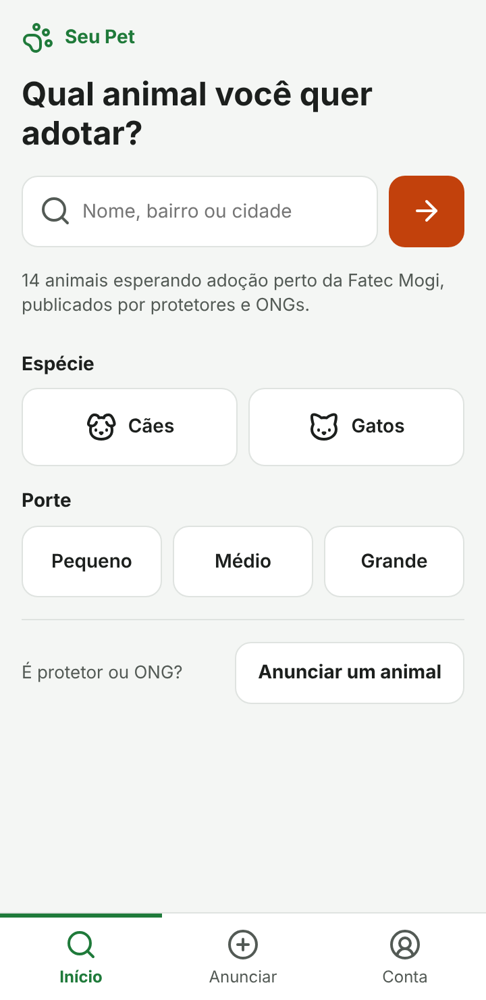
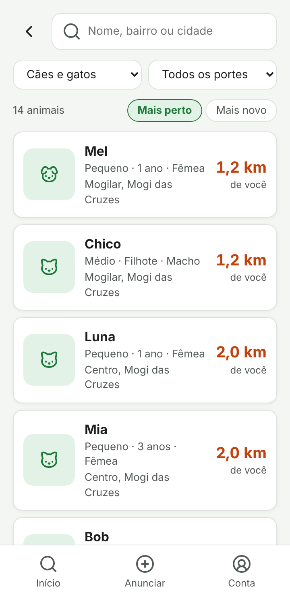
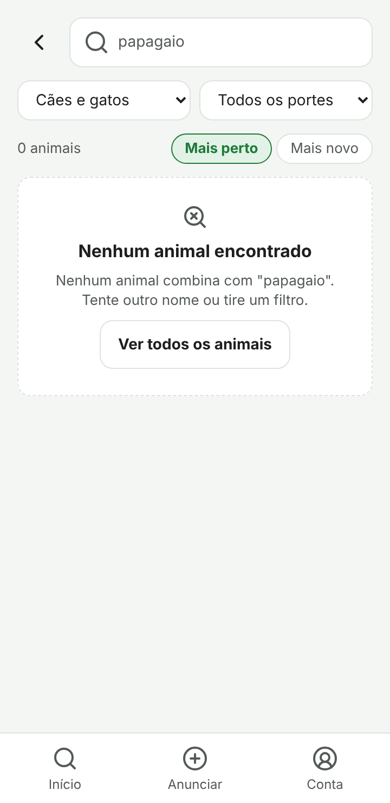
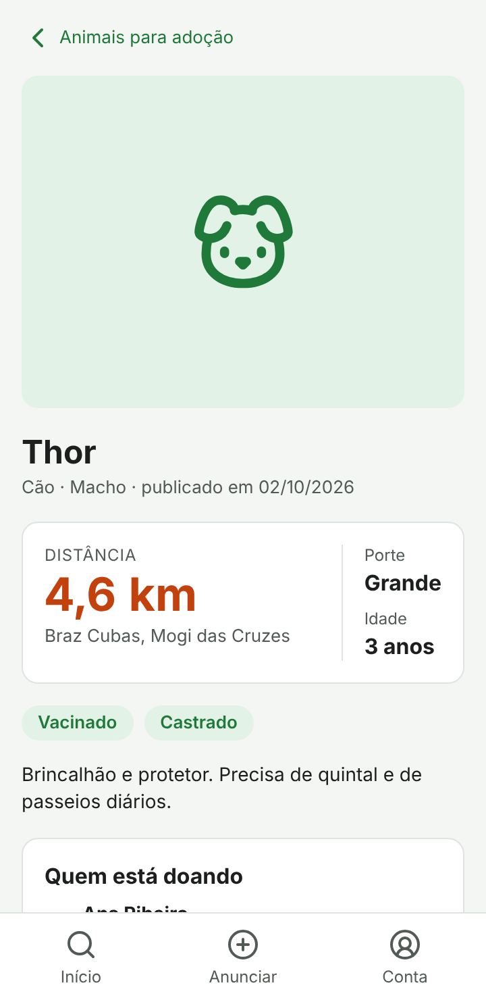
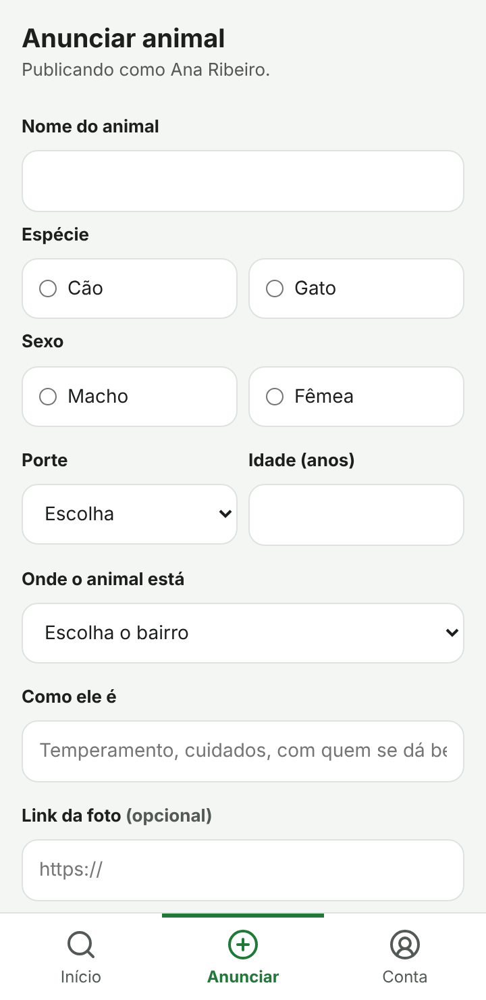
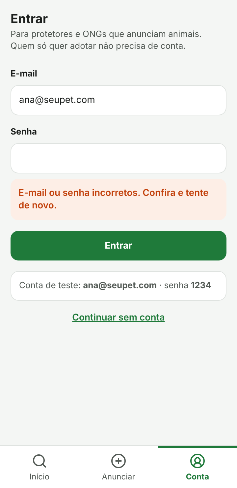
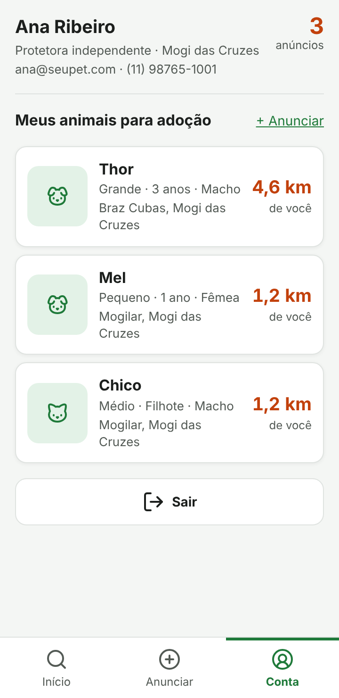
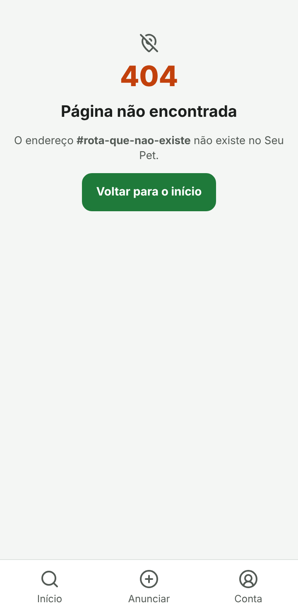

Fatec Mogi das Cruzes · ADS · Desafio 1 · O mesmo esqueleto, outro negócio
Integrantes: Danilo Martins e Gastão Victor · Repositório: github.com/gastaogoncalves/seu-pet
Protetores e ONGs anunciam animais em grupos de mensagem, e o anúncio se perde no dia seguinte. Quem quer adotar não tem onde procurar com calma, nem como comparar.
A frase decide a ordem de cada tela. A distância é o número grande, na cor de destaque. Porte e idade vêm logo ao lado, porque dizem se o animal cabe na rotina e no espaço de quem adota.
| No KiOferta | No seu tema | No Seu Pet |
|---|---|---|
| Produto | O que a pessoa procura | Um animal com certo porte e espécie (ex.: cão de porte pequeno) |
| Oferta | O registro publicado por alguém | O anúncio de adoção: Thor, cão grande, 3 anos, em Braz Cubas |
| Mercado | Quem oferece, ou onde acontece | O protetor ou ONG e o bairro onde o animal está |
| Preço | O número que decide a escolha | A distância até o animal, em km |
| Distância | O segundo critério de decisão | A idade do animal (segundo critério de ordenação) |
| Contribuinte | Quem publica e precisa de conta | Protetor, abrigo ou ONG cadastrado |
| Visitante | Quem só consulta, sem cadastro | A pessoa que quer adotar |
src/
├── index.html uma página só, com #app e o #navbar
├── css/
│ ├── tokens.css cores, tamanhos de texto e grade de 4px
│ ├── base.css reset, botões e o que vale para o site inteiro
│ └── style.css importa tokens e base
└── js/
├── main.js roteador: hashchange + find na lista de rotas
├── rotas/rotas.js a lista única das seis telas
├── navbar/navbar.js (+css) menu gerado a partir da lista, marca o item ativo
├── sessao/sessao.js entrar, sair e usuarioAtual
├── dadosMockados/ animais.js (14), usuarios.js (4), locais.js (9)
└── paginas/
├── inicio/ busca dominante e atalhos por espécie e porte
├── resultados/ filter + sort + map, ordenação e estado vazio
├── detalhe/ find pelo id vindo da lista
├── publicar/ formulário, find para recusar repetido e push
├── conta/ login, filter pelo id do usuário e sair
├── naoEncontrada/ destino do find que devolve undefined
└── cartaoAnimal/ cartão reutilizado em resultados e conta
Cada tela é um módulo que exporta { url, label, icon, pagina } e importa o próprio CSS. As telas que não aparecem no menu (resultados, detalhe, rota inexistente) têm label: "". Os parâmetros vão no hash (#detalhe?id=3, #resultados?busca=thor&porte=Grande). O main.js lê esses parâmetros com URLSearchParams, então o F5 leva sempre à mesma tela.
No KiOferta o preço é vermelho e grande. No Seu Pet a adoção é gratuita, então o número que decide é a distância, porque ninguém adota um animal a 40 km sem pensar duas vezes. Ela é o único elemento na cor de destaque nas listas e no detalhe.
No início, cada animal guardava a própria distância em metros. Quando o formulário de publicar ficou pronto, não havia como o protetor digitar uma distância. Criamos o locais.js: o animal guarda idLocal, e a distância sai de um find. O formulário oferece um select de bairros, e todo animal do mesmo bairro tem a mesma distância.
Busca por texto, espécie, porte e ordenação funcionam juntos e atualizam a lista a cada tecla. O endereço é atualizado com history.replaceState, que não dispara o hashchange: o campo não perde o foco e o F5 ainda volta para a mesma busca.
O KiOferta tem um mapa. Começamos usando a rota #mapa como detalhe do animal, mas um mapa de verdade pediria a localização do usuário antes de mostrar qualquer coisa, e quem chega quer ver o animal, não autorizar o GPS. A distância em km no cartão já responde à pergunta. A rota virou #detalhe.
O grupo tem dois integrantes. A divisão real ficou assim, com os números do git log (git shortlog -sn):
| Integrante | Responsabilidade principal | Entregáveis | Commits |
|---|---|---|---|
| Gastão Victor | Adaptação ao tema e sessão | Ponto de partida, dados mockados de adoção, rota com id para o F5, módulo de sessão e tela de conta, recusa de repetido, busca com estado vazio, rota inexistente, tokens.css e troca de Grid por Flexbox | 19 6bddca1, 93acaf9 a 4d390a1 |
| Danilo Martins | Telas finais e relatório | Tokens ampliados e navbar com item ativo, dados com locais e protetores, telas de início, resultados (filtros e ordenação), detalhe, anunciar e conta com CSS próprio, README e este relatório | 9 28e6584 a 31af22a |
O erro: ao clicar num animal da lista, a tela de detalhe (ainda na rota #mapa) piscava com o nome certo e logo trocava para "Escolha um animal.". O que achamos que era: o find não estava encontrando o animal. O que era de fato: o find funcionava, mas a própria tela terminava com location.hash = "#mapa". Isso disparava o hashchange, e o roteador desenhava a tela de novo, agora sem o animal. Passamos a levar o id no hash (#detalhe?id=3) e deixamos só o roteador desenhar a tela, o que também fez o F5 abrir o mesmo animal.
O erro: a lupa da busca e os ícones das telas apareciam na primeira carga e sumiam ao trocar de tela. O que achamos que era: algum problema na importação do Lucide. O que era de fato: o createIcons() rodava uma única vez, no fim do main.js. O HTML novo de cada tela chegava depois disso, com <i data-lucide> que ninguém convertia. Agora o roteador chama createIcons() depois de cada pagina().








Capturas em 360 × 740 px.